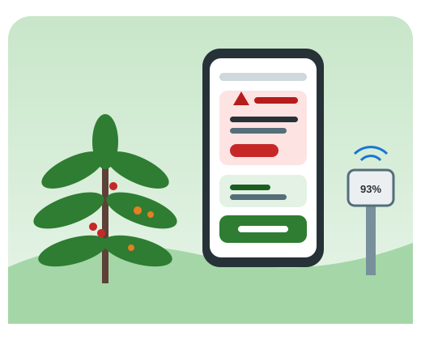

Sistema de alerta temprana para café
Detecta la roya amarilla antes de que se extienda en tu parcela
CaféSync combina sensores de temperatura y humedad con el diagnóstico por foto desde el celular, para que productores, técnicos y cooperativas actúen a tiempo.
Demostración funcional con datos de ejemplo. Lo que registres se guarda solo en este navegador.

Un problema que hoy se detecta tarde
En la investigación con productores, técnicos y cooperativas encontramos que la vigilancia depende de recorrer la parcela a pie y de la experiencia de cada persona. Cuando la roya se ve, normalmente ya se extendió.
-
Pequeños agricultores
Revisar planta por planta en terrenos con pendiente toma mucho tiempo, y al inicio varias enfermedades se parecen.
-
Técnicos de campo
Las parcelas están dispersas y no hay datos ordenados para decidir cuál visitar primero.
-
Cooperativas y empresas
Se enteran del problema cuando el productor avisa, y una detección tardía afecta el volumen y la calidad acopiada.
Cómo funciona
-
Los sensores miden el clima de la parcela
Si la humedad y la temperatura favorecen la roya, recibes un aviso con la zona que conviene revisar primero.
-
Tomas una foto de la hoja sospechosa
La app te muestra el posible problema, su nivel de riesgo y qué hacer, en palabras sencillas.
-
Técnicos y cooperativa ven el mismo dato
Las parcelas se ordenan por riesgo para priorizar visitas y coordinar el apoyo técnico.
Pruébalo según tu rol
Elige un perfil. Las tres vistas comparten la misma información: lo que registra el técnico se refleja en el panel de la cooperativa.
Vista de Rosa Cárdenas, productora de San Ignacio (Cajamarca).
Diagnóstico por foto
Toma una foto de la hoja por el envés, con buena luz y de cerca.
En el celular se abre la cámara; en la computadora puedes elegir una imagen de tu galería.
Sensores y avisos
Simula una nueva lectura de los sensores de una parcela para ver cómo se generan los avisos.
Notificaciones 0
Mis parcelas
Toca una parcela para ver su estado, clima, alertas e historial.
Vista de Ing. Carla Mendoza, técnica de campo de la cooperativa.
Visitas pendientes
Mis parcelas
| Parcela | Productor | Estado | Riesgo | Última actualización | Acciones |
|---|
Aún no tienes parcelas asignadas.
Vista de Cooperativa Agraria Valle Alto · área de acopio y calidad.
Avisos de riesgo alto
Parcelas de productores afiliados
| Parcela | Productor | Estado | Riesgo | Motivo | Última actualización | Acciones |
|---|
Aún no hay parcelas registradas de productores afiliados.
Alertas de los productores
Productores en riesgo
Productores y parcelas
Lleva CaféSync a tu cooperativa
Estamos buscando cooperativas para un piloto con sensores en fincas de productores afiliados. Déjanos tus datos y te contactamos.